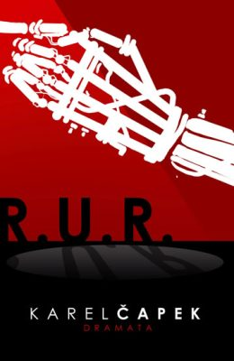

Autor: Karel Čapek
Žánr: Dystopie
Čapkovo utopistické drama, v němž se světu poprvé představilo slovo robot. Vypráví o továrně, v níž vznikají roboti, kteří pracují za lidi a umožňují tak vzniku jakéhosi "ráje". Jenomže nic netrvá věčně a i roboti můžou začít myslet na sebe.
„Už po přečtení prvních stran knih jsem věděla, že se R.U.R. zařadí mezi mé oblíbené. Jeho "nadčasovost" mě opravdu zaujala, když pomyslím, že první vydání knihy bylo roce 1920! Je to až neuvěřitelné, jak Čapek vystihl hlavní podstatu světa s roboty. Toto dílo je určitě takovým "předdílem" pro spoustu jiných literární a filmových prací 20. a 21. století.“ - eternal-magic.cz
Kateřina Fořtová

Unikátní kniha, stále aktuální, čtivá, s promyšleným dějem, jedno z nejlepších čtení v rámci maturitní četby.
Barbora Podzimkova

Velmi čtivé drama s příběhem, jenž byl nadčasový a stále máme, co se z něj učit. Výhodou je, že se to dá přečíst za chvíli a bude Vás to bavit až do konce.